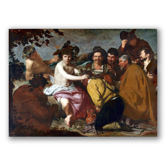
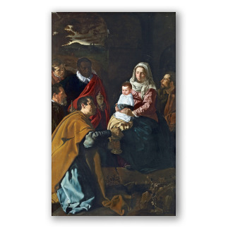
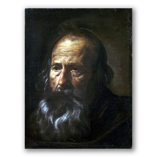
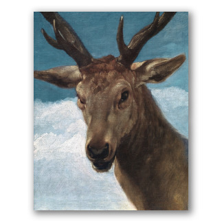
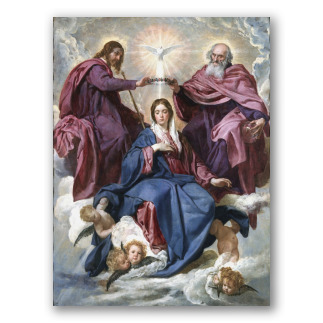
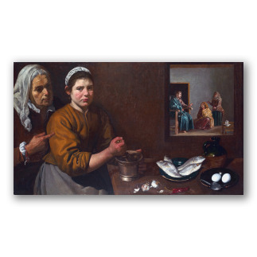
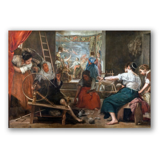
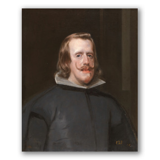
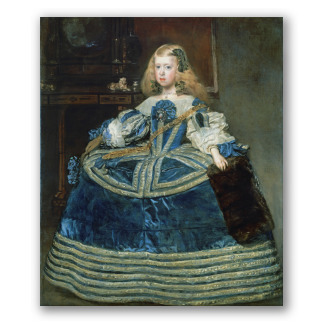

Exposición de cuadros Diego Velázquez
Inicio
Goya
Rubens
El Greco

El triunfo de Baco

Adoración de los Reyes Magos

Cabeza de apóstol

Cabeza de venado

Coronación de la Virgen

Cristo en casa de Marta y María

La fábula de Aracne

Felipe IV

La infanta Margarita en azul